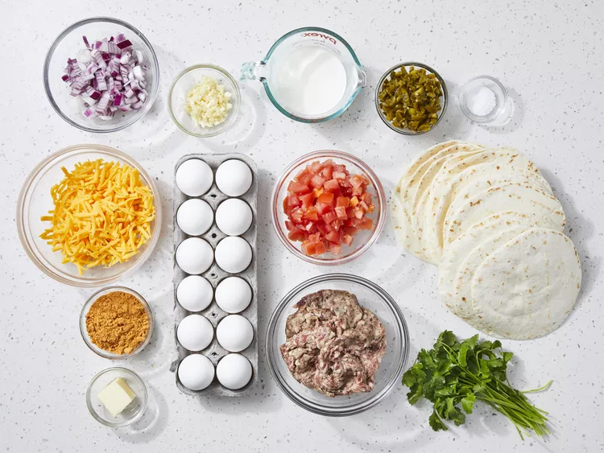
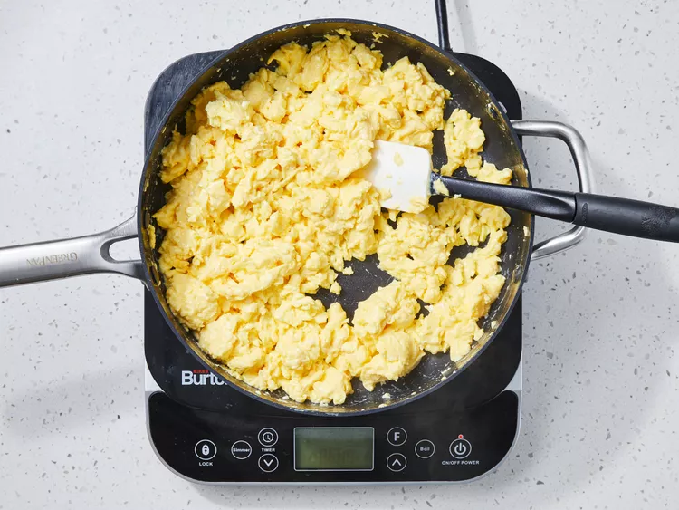
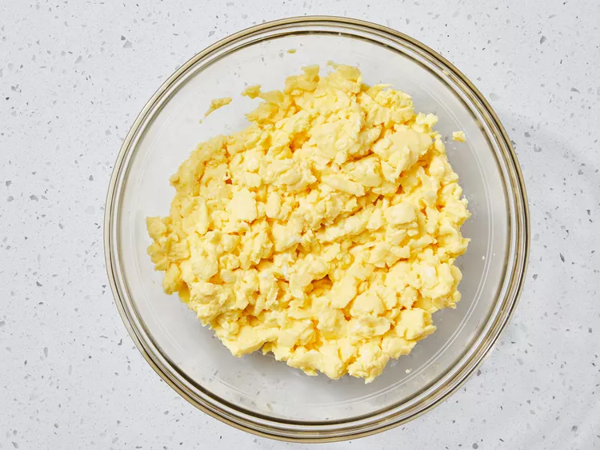
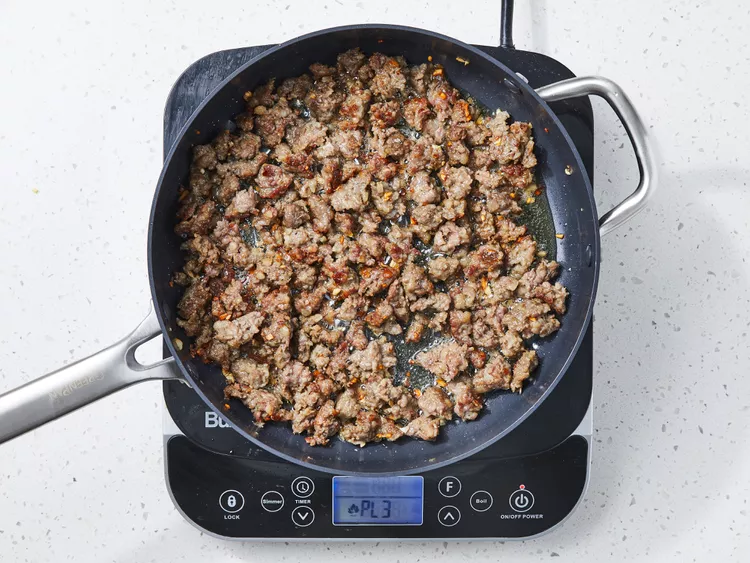
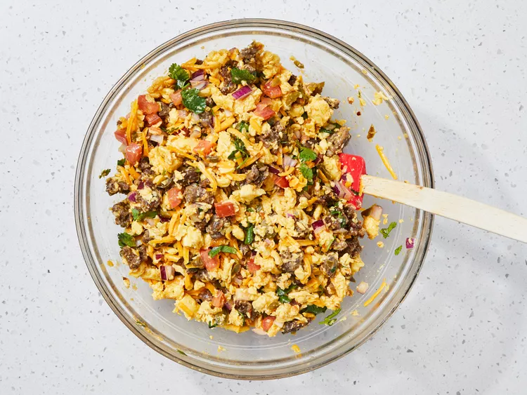
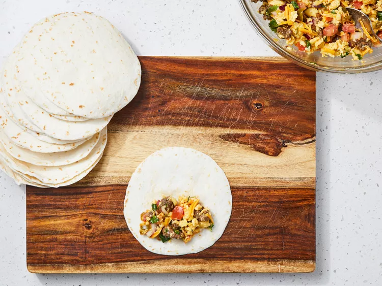
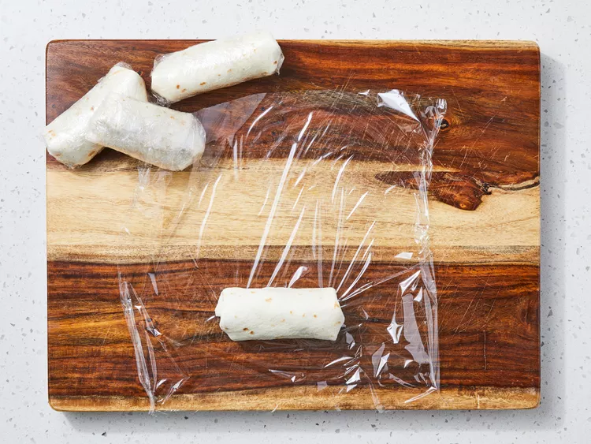
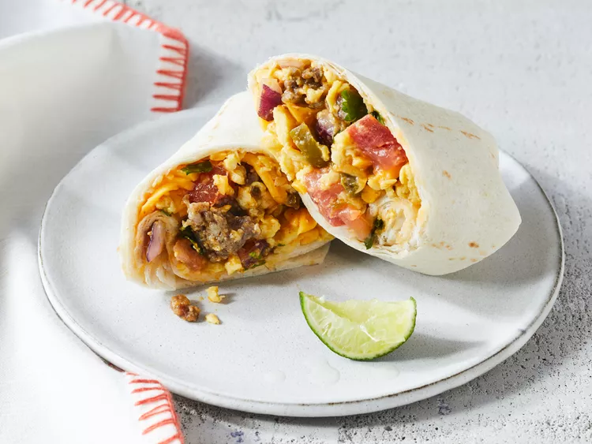

This Mexican-inspired breakfast burrito recipe makes a large batch of fixings. My wife and I love eating Mexican, so I came up with this recipe for more variety in our morning meals.
Step 1
Gather all ingredients.
Step 2
Whisk together eggs, milk, and salt in a large bowl. Heat butter in a large skillet over medium-high heat. Pour in egg mixture; cook and stir until eggs are completely set, about 5 minutes.
Step 3
Break up cooked eggs into small pieces and place into a large bowl. Set aside.
Step 4
Heat the same large skillet over medium heat. Cook and stir sausage and garlic in the hot skillet for 5 minutes, Add onion; continue to cook and stir until sausage is crumbly, evenly browned, and no longer pink. Drain and discard any excess grease.
Step 5
Transfer sausage to eggs in the bowl. Stir in tomato, cilantro, jalapeños, and taco seasoning until well combined. Allow mixture to cool to room temperature, then stir in Cheddar cheese.
Step 6
Lay a tortilla onto your work surface, then spoon some of the egg filling halfway between the bottom edge and the center of tortilla. Flatten filling into a rectangular shape with the back of a spoon. Fold the bottom of tortilla snugly over filling, then fold in the left and right edges. Roll burrito up to the top edge, forming a tight cylinder. Repeat with remaining ingredients.
Step 7
Wrap individual burritos tightly with plastic wrap and store in the freezer until ready to serve.
Step 8
To serve, heat burritos in the microwave until hot, 3 to 4 minutes.